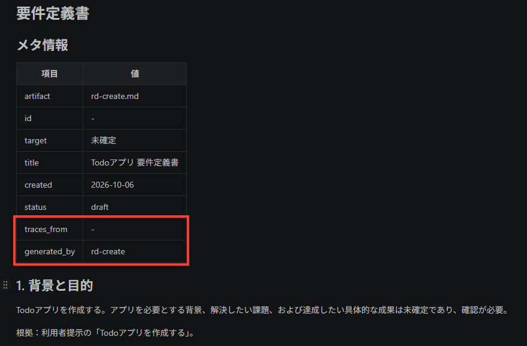
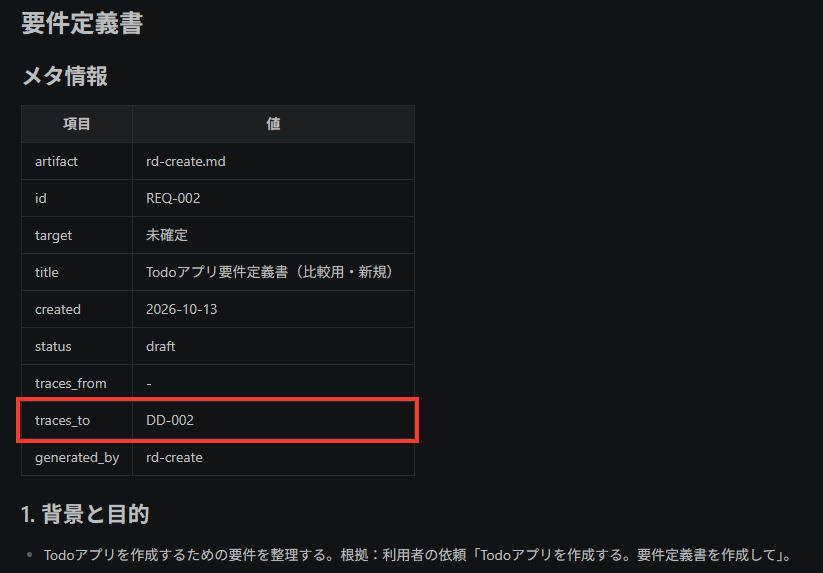

この教材の目的
生成AIに毎回同じ説明を繰り返さず、目的に応じた指示や資料を再利用するための「Skill」の考え方を学びます。
本教材では、Skillの基本と、チームやプロジェクトで扱いやすくする設計・運用の考え方を扱います。具体的な作成操作は、後続のハンズオンで行います。
到達目標
第4回の終了時点で、次のことを目指します。
- Skillと通常のプロンプトの違いを説明できる
- Skillがどのような条件で選ばれ、必要な情報が読み込まれるかを理解する
- 後続のハンズオンでSkillを作成・修正できる
全2回のトレーニング概要
| 回 | テーマ | 学ぶこと |
|---|---|---|
| 第4回 | Skill | Skillの概要を理解し、作成・修正を体験する |
| 第5回 | Harness | Harnessの概要と役割を理解し、作成を体験する |
Harnessは、AIエージェントが作業を進める際の実行環境、ルール、検証方法などをまとめて扱うための仕組みです。第5回で詳しく扱います。
第4回目のアジェンダ
全体で120分を想定しています。（休憩5分を含む）
| 時間 | 内容 | 所要 |
|---|---|---|
| 0～10分 | オリエンテーション・環境チェック | 10分 |
| 10～20分 | 講義① Skillの概要 | 10分 |
| 20～35分 | 講義② Skillを設計・運用する仕組み | 15分 |
| 35～55分 | ハンズオン① Skill修正（3＋3＋5＋4＋5分） | 20分 |
| 55～60分 | 休憩 | 5分 |
| 60～80分 | ハンズオン② Skill作成（手順1～7） | 20分 |
| 80～110分 | ②の補完・追加練習。必須演習を終えた方は任意演習③（動作確認込み30分） | 30分 |
| 110～120分 | 振り返り・Q＆A・アンケート回答 | 10分 |
オリエンテーション
Skillの活用例には、「変更後のコードをレビューする」「障害報告を決まった形式で要約する」などがあります。
今日は、特定の製品の画面操作ではなく、どの環境にも応用しやすい考え方を中心に学びます。ファイルの配置方法、Skillの選択方法、使えるメタ情報は、利用する製品や実装により異なります。
環境チェックリスト
- GitHub Copilotまたは利用するAIエージェントにサインインできること
- この教材が手元にあること
- 後続のハンズオンで使うリポジトリまたはフォルダーにアクセスできること
不足がある場合は、講師またはサポート担当へ状況を共有してください。確認待ちの間も、講義資料を読み進めて構いません。
開始前の準備
オリエンテーション・環境チェックの0～10分で確認します。
- VS Codeの「ファイル」→「フォルダーを開く」で、次のフォルダーを別ウィンドウで開きます。
github-copilot-training/samples/session4/skill_improvement
- エクスプローラーで
.github/skills/rd-create/SKILL.md、.github/skills/_shared/CONVENTIONS.md、.github/copilot-instructions.mdがあることを確認します。この演習のSkill配置先は、開いたフォルダー直下の.github/skills/です。 - Copilot Chatを開いてサインインし、モードを「Agent」にします。入力欄に
/を入力し、候補にrd-createが表示されることを確認します。まだ送信しません。
候補が出ない場合は、開いたフォルダーと配置先を確認し、必要に応じてVS Codeのウィンドウを再読み込みします。解決しない場合は講師へ共有してください。
講義① Skillの概要
Skillとは何か
Skillとは、AIに特定の作業を依頼するときの再利用可能な指示パッケージです。
毎回同じ手順や観点をプロンプトに書く代わりに、作業手順・判断基準・出力形式をあらかじめ定義しておくことで、同じ種類の作業を効率よく進め、一定の品質を保ちやすくなります。
多くのAgent Skills実装では、Skillはフォルダー内の SKILL.md を中心に構成されます。SKILL.md には以下のような内容を記載します。
- Skillの名前
- Skillの説明
- Skillを利用する条件
- 実行時の手順やルール
また、必要に応じてテンプレート、サンプルファイル、スクリプトなどを同じフォルダーに配置することもできます。
Skillの基本的なファイル／フォルダー構成
基本構成
基本は、SkillごとのフォルダーにSKILL.mdを置く構成です。必要な補助ファイルも同じフォルダー内にまとめます。
skill-name/ ├── SKILL.md ├── references/ ├── scripts/ └── assets/
| ファイル／フォルダー | 役割 |
|---|---|
SKILL.md | Skillの名前・説明・利用条件・手順を記載する |
references/ | 必要に応じて読む規約や詳細な資料を置く |
scripts/ | 実行するスクリプトを置く |
assets/ | テンプレートや出力に使う素材を置く |
最小構成はSKILL.mdだけで、補助フォルダーは任意です。補助ファイルを使う場合は、SKILL.mdに参照先や使用する手順を記載します。
具体例：要件定義書作成Skill
要件定義書を作成するrd-createを、GitHub Copilot向けに配置する例です。
project/
└── .github/
├── copilot-instructions.md
└── skills/
├── _shared/
│ └── CONVENTIONS.md
└── rd-create/
└── SKILL.md
| ファイル | 役割 |
|---|---|
.github/copilot-instructions.md | Skill実行前に共通規約を確認するなど、プロジェクト共通の指示 |
.github/skills/rd-create/SKILL.md | Skillの名前・説明、要件定義書の作成手順・出力形式 |
.github/skills/_shared/CONVENTIONS.md | 成果物のメタ情報、ID、トレーサビリティ、格納先の正本 |
rd-create/が1つのSkillのフォルダーです。copilot-instructions.mdはプロジェクト共通の指示、_shared/CONVENTIONS.mdは複数のSkillから参照する共通規約として配置しています。これらは個々のSkillの必須構成ではありません。
次はrd-create/SKILL.mdの記述例です。
--- name: rd-create description: 要件定義書を作成する。目的、対象範囲、要件、制約を整理し、合意に利用できる文書を作成する場合に使用する。 --- # 要件定義書作成Skill ## 作成手順 1. 作成前に[共通規約](../_shared/CONVENTIONS.md)を読む。 2. 入力の目的、利用者、対象範囲、要件、制約を整理する。不足情報は推測しない。 3. 共通規約のメタ情報・格納先に従い、要件定義書を保存する。
Skillとプロンプトの違い
| 観点 | 通常のプロンプト | Skill |
|---|---|---|
| 利用目的 | その場の質問・依頼を伝える | 繰り返す作業の進め方を定義する |
| 向いている用途 | 単発の調査、相談、試行 | レビュー、定型文書作成、決まった手順の調査など |
| 再利用性 | 会話ごとに書き直すことが多い | 同じ目的の作業で再利用しやすい |
| メリット | 手軽に使える | 確認手順や出力形式をそろえ、品質を保ちやすくする |
| コンテキスト | 入力した内容と会話履歴が中心 | Skill本体に加え、必要時に関連資料やスクリプトを参照する |
Skillだけで品質や結果の再現性が保証されるわけではありません。入力条件と実行結果の確認も必要です。
Copilot InstructionsとSkillの関係
GitHub Copilotが利用者の依頼を処理するときは、まず、その作業に適用される共通ルールを参照します。共通ルールは、たとえば .github/copilot-instructions.md や .github/instructions/ 内の *.instructions.md に記載します。
copilot-instructions.md は、プロジェクト内の作業に共通して適用したいルールを書くためのファイルです。*.instructions.md は、設定に応じて特定のファイルや作業を対象にできます。どちらも、対象となる範囲でCopilotに継続して守ってほしいルールを伝えるために使います。
たとえば、次のように役割を分けられます。
- 「Pythonコードの命名規則を守る」: 対象のコードを扱うときに共通して守るため、Instructionsに記載する
- 「変更内容を自己レビューする」: レビューという特定の作業を進めるため、Skillとして定義する
つまり、Instructionsは「普段から守るルール」、Skillは「特定の作業で使う進め方」です。両者はどちらか一方を選ぶものではなく、Skillを使う作業でも、適用されるInstructionsのルールを守ります。
ここで示したファイル名と配置はGitHub Copilotにおける例です。他のAgent Skills対応環境では、Instructionsに相当する仕組みやファイルの配置が異なる場合があります。
Skillが利用される流れ
基本的な流れ
最初に名前と説明を認識し、選択されたSkillの本文、必要な資料の順に参照します。必要な情報を後から読む仕組みを「段階的開示」と呼びます。
flowchart TD
metadata[Skillの名前・説明を認識] --> automatic[依頼内容に応じて自動選択]
metadata --> explicit[利用者が /Skill名 で指定]
automatic --> body[SKILL.md本文を読む]
explicit --> body
body --> resources[共通規約・必要な資料を参照]
resources --> output[作業して結果を返す]
良いSkill定義の考え方
Skillは、利用者の依頼内容に応じて選択されるため、目的や利用場面が伝わるように定義することが重要です。説明が曖昧すぎると必要な場面で利用されず、逆に対象を広くしすぎると関係のない場面で利用される可能性があります。
説明文や利用条件が適切でない場合の問題
- 必要なときに利用されない: Skillの目的や利用条件が分からない
- 関係のない場面で利用される: 適用範囲が広すぎる
- 期待する結果が得られない: 入力や出力の条件が曖昧
良いSkillと改善が必要なSkillの短い例
改善が必要な例
name: helper description: 開発を支援します。
目的、対象、利用条件が不明です。この説明では、いつ選ぶべきかを判断しにくくなります。
良い例
name: qa-self-review description: 変更内容を自己レビューし、仕様との一致、テスト不足、互換性の懸念を確認する。実装や設定を変更した後、レビュー前に使用する。指摘・根拠・確認事項を表で出力する。
この例は、行うことと利用する時点が分かります。
| ヘッダーの必須項目（YAML） | 今回のGitHub Copilotでの制約 |
|---|---|
name | 親フォルダー名と一致。小文字英数字とハイフンで最大64文字。先頭・末尾のハイフンと連続ハイフンは不可 [1] |
description | 何をするか・いつ使うかを記載。最大1024文字 [1] |
出典：[1] VS Code公式「SKILL.md file format」
Skill作成のベストプラクティス
| 項目 | 推奨事項 |
|---|---|
| 本文の分量 | 500行未満・5,000トークン未満を推奨。長い仕様書や参考情報は別ファイルに分ける [2] |
| 補足資料の参照 | 本文から相対パスで直接リンクする。資料から別資料へ何段階もたどる構成は避ける [2] |
| 本文に含める内容 | 作業手順に加え、入力例・期待する出力例・例外時の対応を示す [2] |
講義② Skillを設計・運用する仕組み
Skillを増やすほど、見つけやすさ、変更のしやすさ、品質確認の方法が重要になります。ここでは、特定企業の社内規約ではなく、プロジェクトで採用できる一般的な設計・運用方法を紹介します。
分かりやすい命名規則
名前は、作業対象と目的が想像できるものにします。
| 分類 | 名前の例 | 理由 |
|---|---|---|
| 良い例 | api-change-review、release-note-draft、qa-self-review | 対象や作業目的を判断できる |
| 避けたい例 | helper、tools、skill-1 | 名前だけでは用途を判断しにくい |
Skill命名規則の例
| 接頭辞 | 意味 | 用途例 | Skill名例 |
|---|---|---|---|
| rd | Requirement Definition | 要件定義書の作成・レビュー | rd-review |
| bd | Basic Design | 基本設計書の作成・レビュー | bd-review |
| dd | Detail Design | 詳細設計書の作成・レビュー | dd-review |
| cd | Coding | ソースコードの作成・レビュー | cd-review |
| ut | Unit Test | 単体テストの作成・確認 | ut-create |
| it | Integration Test | 結合テストの作成・確認 | it-review |
一般的には、小文字とハイフンで単語を区切る形式にすると読みやすくなります。ただし、使用できる文字や名前の長さは、利用するSkillの仕様に従ってください。
成果物の管理用メタ情報
ここで扱うのは、Skillが作成した要件定義書などの成果物を管理するための情報です。Skill自体の名前・利用条件を記載するname・descriptionとは別のものです。
成果物の種類やID、作成日、レビュー状況、関連する成果物を記録しておくと、レビューや保守の際に関係を追跡しやすくなります。
次は、この教材の共通規約で採用している項目です。GitHub CopilotやAgent Skillsの必須仕様ではありません。
| 項目 | 説明 |
|---|---|
| artifact | 成果物の種類またはファイル名 |
| id | 成果物を一意に識別するID。発番対象外なら- |
| target | 対象バッチ・共有ライブラリ・横断作業を識別する安定したID |
| title | 成果物の日本語タイトル |
| created | 作成日（YYYY-MM-DD） |
| status | レビュー状況や承認状況（draft / reviewed / approved） |
| traces_from | この成果物につながる上流成果物ID |
| traces_to | この成果物から作られる下流成果物ID（予約済みIDを含む） |
| generated_by | 作成に使用したSkill名 |
例えば、rd-createが作る要件定義書には、次のようなメタ情報を付けます（項目を抜粋）。
| 項目 | 値の例 |
|---|---|
id | RD-001 |
title | Todoアプリ 要件定義書 |
traces_to | DD-001 |
generated_by | rd-create |
この例のDD-001は、下流の詳細設計書が未作成の段階で予約したIDです。
自己レビュー用Skillを設ける考え方
qa-self-review のような自己レビュー用Skillは、作業者が提出前に同じ観点で確認するための設計例です。
成果物の管理用メタ情報も参考に、レビュー状況や関連する成果物を確認します。
たとえば、次の確認を標準化できます。
- 要件や依頼内容と変更内容が一致しているか
- テストが追加・更新されているか
- 既存機能との互換性や影響範囲を確認したか
プロジェクトで繰り返し発生する確認作業がある場合に、専用Skillとして分ける判断ができます。
Skillの品質を確認する観点
直前の自己レビューが変更したコードなどの成果物を対象とするのに対し、ここではSkillの定義と参照資料を確認します。公開・更新する前に、次の3点を確認します。
- 定義・参照の正確性: 指示、参照先、前提条件が現在の運用と合い、不要な資料や長い説明を読み込ませていないか
- 適用条件と出力: 使う場面・使わない場面と、結果に含める内容・順序・形式が明確か
- 試行と改善: 想定する依頼を別の会話でも試し、Skillの選択と出力を確認して、期待との差に応じて修正しているか
変更後も同じ依頼で再実行し、修正の効果を比較します。
共通領域を置く考え方
複数のSkillで使う規約やテンプレートは、_sharedなどの共通領域にまとめられます。共通ルールを一か所で管理でき、各Skillへの複写による更新漏れを減らせます。
次は、複数のSkillが同じ共通規約を参照する構成の例です。
.github/skills/ ├── _shared/ │ └── CONVENTIONS.md ├── rd-create/ │ └── SKILL.md └── qa-self-review/ └── SKILL.md
共通領域に置くだけでは適用されません。各Skillの本文で参照先と読むタイミングを明示します。たとえば、rd-create/SKILL.mdには次のように記載します。
成果物を作成する前に[共通規約](../_shared/CONVENTIONS.md)を読む。 メタ情報、ID、トレーサビリティ、格納先は共通規約に従う。
共通化しすぎた場合のデメリット
共通資料を増やしすぎると、各Skillが何に依存しているか分かりにくくなります。また、小さな変更が多くのSkillの出力へ影響する可能性があります。
共通化するのは、次の条件を満たす内容に絞ると判断しやすくなります。
- 複数のSkillで同じ意味・同じ表現を使う
- 参照先を明示しても、Skillの目的が分かりにくくならない
一方、特定の作業にだけ必要な判断基準、手順、例外処理は、そのSkill内に置きます。迷ったときは「この内容が変わると、複数のSkillが同時に変わるか」を問いかけます。
講義部分のまとめ
- 用途を決める: 目的、使う場面、入力、出力を決める。
- 定義して配置する: 名前・説明と簡潔な手順を定義し、共通資料への参照を明示して配置する。
- 実行結果を確認する: Skillを呼び出し、期待する出力との差を特定して必要な箇所だけ修正する。
ハンズオン① Skill修正
目的
情報が不足している共通規約と、それを参照するSkillの事前実行結果を確認し、期待する結果との差から問題を特定します。
その後、GitHub Copilotへ共通規約の修正を依頼し、差分を確認してSkillを再実行します。
到達目標
- 問題特定：修正前のSkill・共通規約・実行結果から不足する指示を特定できる
- 修正依頼：GitHub Copilotへ対象を限定して修正を依頼し、差分を確認できる
- 結果比較：同じ入力で再実行し、修正前後のメタ情報の違いを説明できる
手順1 修正前のSkillと実行結果を確認する
操作手順
- 次のSkillと共通規約を開きます。
Skill： github-copilot-training\samples\session4\skill_improvement\.github\skills\rd-create\SKILL.md 共通規約（修正対象）： github-copilot-training\samples\session4\skill_improvement\.github\skills\_shared\CONVENTIONS.md
- 次の既存の修正前結果を確認します。
既存の修正前結果： github-copilot-training\samples\session4\skill_improvement\docs\2026-10-06_01\rd-create.md
以下は修正前のSkill実行結果の一部です。

図1：修正前のSkill実行結果の一部。メタ情報に traces_toがない - Skillの共通規約を参照する指示、規約のメタ情報表、結果のメタ情報表を見比べます。
- Skillと共通指示が、成果物作成時に共通規約を参照する構成か
- 共通規約に
traces_toの意味・形式・値が不明な場合の扱いがあるか - 修正前結果のメタ情報に
traces_toがあるか
補足traces_toは、この成果物から作られる下流成果物を表すメタ情報です。利用する環境の公式な必須仕様ではなく、この教材で扱うプロジェクトに採用した設計例です。
修正前後で共通の要件入力
/rd-create Todoアプリを作成する。要件定義書を作成して。
要件の依頼文は修正前後で変えません。修正後の実行では、手順5のプロンプトで新規作成・保存先・上書き禁止を追加指定します。これは保存方法の指定であり、アプリの要件を追加するものではありません。
今回の修正対象は、共通規約に不足しているメタ情報のtraces_toの定義です。そのためSkill本体は修正せず、CONVENTIONS.mdを修正します。
手順2 期待する結果との差を整理する
操作手順
次の表を使い、共通規約の不足と実行結果の問題を対応付けます。修正前の状態は、手順1の修正前結果で確認してください。
| 観点 | 修正前の状態 | 期待する状態 | 不足する指示 |
|---|---|---|---|
| 意味 | 共通メタ情報にtraces_toの定義がない | この成果物から作られる下流成果物IDを示す | プロジェクト独自のトレーサビリティ項目として意味を定義する |
| 形式 | 規約に項目がなく、既存結果の表にもない | 次の未使用のDD-###を予約してメタ情報表へ出力する。配布直後の初回はDD-002。複数IDは, 区切り | 詳細設計書が未作成でも予約IDを記載し、詳細設計を作らないと明示された場合だけ-とする |
| 推測しない扱い | 未確認値一般の扱いはあるが、traces_toへの適用が明示されていない | 既存成果物・予約記録を確認して採番する。確認できなければIDを推測せず、未確定の状態と確認事項を示す | 「未作成」「作成しない」「予約判断に必要な情報が不明」を区別し、不明な場合は共通規約§1を適用する |
以下は修正後のメタ情報の例です。traces_toに、配布直後の初回期待値であるDD-002が記載されています。画像に写っていない本文の予約ID、採番の根拠、新規保存先、既存成果物が上書きされていないことは、手順5で実際の成果物・予約記録・差分を確認してください。

traces_to に DD-002 が記載されている手順3 GitHub Copilotへ修正を依頼する
操作手順
次のプロンプトをコピーしてGitHub Copilotへ送信します。
.github/skills/_shared/CONVENTIONS.mdを確認し、要件定義書から詳細設計書へのトレーサビリティを規定してください。 共通メタ情報に`traces_to`の意味を追加し、`rd-create`が通常は既存成果物と予約記録を確認して未使用の詳細設計書ID（`DD-###`）を予約し、記載する規則を追加してください。詳細設計を作成しないことが明示されている場合は、既存の「該当なし」の規則と整合させてください。IDを推測で採番しないでください。 変更はこのファイルの必要箇所に限り、変更内容を簡潔に説明してください。
手順4 修正差分を確認する
操作手順
- ファイルを保存し、VS Code左側の「ソース管理」を開きます。
- 「変更」から、この演習フォルダーの
.github/skills/_shared/CONVENTIONS.mdを選び、左右の差分を確認します。演習開始前からある他の変更は対象に含めません。 - 次の内容を確認してから再実行へ進みます。
- この依頼で変更されたのが対象の共通規約だけか
traces_toに関する必要な記述が追加されているか- 問題と関係のない記述が変更されていないか
意図しない変更があれば、差分エディター右側でその変更行だけを選択し、右クリックの「選択した範囲を元に戻す（Revert Selected Ranges）」を使います。表示されない場合は、その部分だけを左側の元の内容に戻して保存します。既存の変更や正しい修正まで消す「すべての変更を破棄」は使用しません。
取り消した部分の差分を再確認し、問題点を具体的に伝えてGitHub Copilotへ対象箇所だけの再修正を依頼してください。
手順5 Skillを実行する
操作手順
- 共通規約の修正を保存し、
docs/の既存ディレクトリを確認します。保存先は共通規約§4.1に従い、実行日のYYYY-MM-DDと同日の最大NN+ 1（同日のディレクトリがなければ01）で決めます。既存ディレクトリは再利用しません。 - Copilot Chatで「新しいチャット」を開いてAgentモードにします。
/の候補からrd-createを選び、次のプロンプトに、上記1で決めた具体的な保存先（docs/YYYY-MM-DD_NN/rd-create.md）、既存成果物・予約記録の変更・上書き禁止、指定先が既に存在する場合は上書きせず保存先の再指定を求めることを追記して送信します。/rd-create Todoアプリを作成する。要件定義書を作成して。 今回は既存成果物の改訂ではなく、比較用の新しい要件定義書を作成してください。
- 指定先の
rd-create.mdを開き、新しい成果物として保存されていることを確認します。「ソース管理」で既存成果物に今回の差分がなく、修正前結果が上書きされていないことも確認します。 - 修正前結果を開き、メタ情報表を左右に並べて比較します。
| 比較項目 | 確認する内容 |
|---|---|
traces_to | 修正前の結果には項目がない。修正後は既存・予約済みIDと重複しない次のDD-###が記載されている。配布直後は本文に予約されたDD-001だけが存在するため、初回の例はDD-002 |
| 入力の維持 | 要件の依頼文「Todoアプリを作成する。要件定義書を作成して。」を維持している。追加した指定は新規作成・保存方法であり、未指定の利用者、機能、対象範囲、アプリの保存方式などは未確定として扱われている |
| 修正の効果 | traces_toと本文の予約IDが一致し、既存・予約済みIDを再利用していない。採番の根拠が示され、未指定事項を推測していない |
今回確認するのは、新しい要件定義書で次の未使用IDを予約するケースです。追加練習や再実行では、その時点の既存成果物・予約記録に従って番号が進むため、DD-002に固定しません。
休憩
55～60分の5分間は休憩です。
休憩前に、変更したファイルが保存されていることを確認してください。
ハンズオン② Skill作成
目的
Todoアプリを読む順番と理由を案内するSkillを作り、保存、呼び出し、結果確認まで体験します。
題材
対象は、次のフォルダー直下にあるFlaskのTodoアプリです。ハンズオン①とは別のフォルダーを開きます。
github-copilot-training/samples/session4/skill_create
| ファイル | 役割 |
|---|---|
server.py | Flaskの起動、TodoのAPI、SQLiteへの保存 |
templates/index.html | 入力フォームと一覧のHTML、静的ファイルの読み込み |
static/script.js | Todoの追加・編集・完了切り替え・削除、APIとの通信 |
static/style.css | 画面のレイアウト、状態別の表示、狭い画面への対応 |
開いたフォルダーには、手順2で使う参照用Skill（.github/skills/todo-entry-point/）も配置済みです。これはTodoアプリの一部ではないため、上の表には含めていません。
samples/skill_handson2/todo-app-db/は、skill_create直下を基準とした、このアプリのデータベース保存先です。別のサンプルアプリを探す場所ではありません。バイナリのtodos.dbを直接読む必要はなく、保存先はserver.pyのDB_PATHで確認します。
完成イメージ
作成するSkill名はproject-file-guide、保存先は開いたskill_createからの相対パスで.github/skills/project-file-guide/SKILL.mdです。
/project-file-guideで呼び出すと、Todoアプリの実在するファイルについて「順番 / 確認するファイル・箇所 / 理由」の表がチャットに出力されます。生成後のSkillは読み取り専用で、アプリも調査結果ファイルも変更・作成しません。
手順と成功条件
手順1～7で、対象と参照用Skillの確認、要件整理、Skill作成、レビュー、呼び出し、結果確認を行います。成功条件のチェックは末尾の「順番と理由 / ファイルの実在 / 変更なし」の3点にまとめています。
手順1 対象プロジェクトを確認する
受講者の操作
- VS Codeの「ファイル」→「フォルダーを開く」で、
github-copilot-training/samples/session4/skill_createを別ウィンドウで開きます。複数の演習フォルダーをまとめて開いた状態では作業しません。 - VS Code左側の「ソース管理」を開き、
skill_create内の変更一覧（「ステージされている変更」も含む）と、各ファイルを選んで表示される差分を確認します。既存の変更があれば、一覧と差分を画面のキャプチャなどで記録し、後の比較に使います。
この演習ではアプリを起動せず、依存パッケージのインストールも不要です。server.pyはimport時にもデータベースを初期化するため、調査目的で起動・importしません。
| 区分 | 対象 |
|---|---|
| 新規作成を許可 | .github/skills/project-file-guide/SKILL.mdだけ |
| 読み取り専用 | server.py、templates/、static/、samples/、配布済みの参照用Skillと補助資料 |
| 対象外 | 親フォルダー、他の演習フォルダー、別のサンプル |
エラーが発生した場合
対象ファイルや参照用Skillがない場合、またはソース管理で変更状況を確認できない場合は、アプリを変更せず、開いたフォルダーと画面の状態やエラーメッセージを講師へ共有してください。
手順2 参照用Skillの目的と出力を確認する
参照用Skillの内容を読み、今回作成するSkillとの違いを確認します。この手順ではSkillを実行・変更しません。
受講者の操作
.github/skills/todo-entry-point/SKILL.mdを開きます。これはサーバーの起点だけを確認する配布済みの参照用Skillで、今回作成するSkillの完成版ではありません。- 本文の「目的と利用条件」「制約と出力形式」を読み、サーバーの起点を調べて「ファイル / 起点 / 根拠」の表を出力することと、読み取り専用であることを確認します。
- 今回作成する
project-file-guideでは、調べる範囲をTodoアプリ全体へ広げ、「順番 / 確認するファイル・箇所 / 理由」の表を出力する点が異なることを確認します。
手順3 作成するSkillの要件を整理する
受講者の操作
次の3点を整理します。参照用Skillと同じ読み取り専用の制約を守り、案内する範囲をサーバーの起点からTodoアプリ全体へ広げます。
- 目的と利用条件：名称は
project-file-guide。プロジェクトを理解するためのファイル確認順を知りたい場合に利用し、実装・不具合修正・不要コード削除には利用しない。 - 入力と出力：入力は開いた
skill_createのTodoアプリ。出力は5手程度の「順番 / 確認するファイル・箇所 / 理由」の表と、不明点・配置されていない資料の明示。 - 調査手順と制約：まずルート構成を確認し、起点、画面、操作、APIと保存、表示をたどる。実在するファイルだけを使い、生成後の実行ではファイルの作成・変更・削除やアプリの起動を行わない。
手順4 GitHub CopilotへSkill作成を依頼する
受講者の操作
skill_createを開いたウィンドウでCopilot Chatを開き、Agentモードで次のプロンプトを送信します。
開いているskill_createのTodoアプリを理解するために、ファイル確認順と理由を案内するSkillを作成してください。 Skill名：project-file-guide 保存先：.github/skills/project-file-guide/SKILL.md 対象：skill_create直下のserver.py、templates/index.html、static/script.js、static/style.css 作成前に、次の確認を行ってください。 1. .github/skills/todo-entry-point/SKILL.mdと、本文から参照されている補助資料を読み、目的・出力・読み取り専用の制約を確認する 2. skill_createのルート構成と対象4ファイルを読み、実在するファイルと役割を確認する 3. Gitの既存変更を確認し、作成を許可するのは上記保存先の1ファイルだけとする 作成するSkillの要件は次のとおりです。 - 先頭に---で囲んだYAMLを置き、nameをproject-file-guideとし、descriptionに目的と利用条件を記載する。本文にも利用する場面・利用しない場面と必要な入力を明記する - ルート構成を確認してから、Todoアプリの重要なファイルを5手程度で案内する。出力は「順番 / 確認するファイル・箇所 / 理由」の表とし、存在しないREADME・依存関係の定義・テストや不明な情報は推測せず、その状態を明示する - 生成後のSkill実行は読み取り専用とし、ファイルの作成・変更・削除、サーバーの起動、server.pyのimportを行わない。調査結果はチャットだけに出力する 「読み取り専用」は生成後のSkill実行に適用します。今回は指定したSKILL.mdの新規作成・保存を許可します。 アプリ、データベース、参照用Skill、補助資料、他の演習フォルダーは変更しないでください。 調査結果と作成方針を簡潔に説明した後、指定先へ実際にファイルを保存してください。内容の提示だけで終わらないでください。 作成後は保存先と利用条件を要約してください。
応答にコードが表示されただけで完了とせず、エクスプローラーで.github/skills/project-file-guide/SKILL.mdが保存されていることを確認します。
手順5 生成されたSkillを確認する
受講者の操作
- 保存された
SKILL.mdを開き、YAMLのname: project-file-guideとdescription、本文の利用条件・入力・表の出力形式を確認します。 - 5手程度の調査手順と、生成後は読み取りだけで起動・import・ファイル保存をしない制約を確認します。存在しないファイルを読む指示があれば、指定のSkillだけを修正するよう依頼します。
- 「ソース管理」の変更一覧と各ファイルの差分を、手順1で確認した状態と比較します。今回追加された変更が
.github/skills/project-file-guide/SKILL.mdだけであり、既存の変更に新たな差分が加わっていないことを確認します。手順7との比較用に、Skill実行前の一覧と差分を画面のキャプチャなどで記録します。
手順6 Skillを呼び出す
受講者の操作
- ファイルを保存し、Copilot Chatで「新しいチャット」を開いてAgentモードにします。
- 入力欄に
/を入力し、候補からproject-file-guideを選びます。候補がない場合は、開いたフォルダー、保存先、YAMLを確認し、必要に応じてウィンドウを再読み込みします。解決しない場合は講師へ共有します。 - 選んだSkillに続けて次の依頼文を入力し、送信します。
/project-file-guide skill_createのTodoアプリを理解するために、どのファイルから確認すればよいですか。
出力例（確認順と理由）
順番は一例です。理由が説明されていれば多少の違いは許容します。同じファイルを、起動とAPIなど別の観点で再確認しても構いません。
| 順番 | 確認するファイル・箇所 | 理由 |
|---|---|---|
| 1 | server.pyのimport、app = Flask(__name__)、末尾の起動条件 | 使用技術とエントリーポイントを把握する |
| 2 | templates/index.htmlのフォーム、一覧、url_for(...) | 画面構造とJavaScript・CSSへのつながりを把握する |
| 3 | static/script.jsのloadTodos、updateTodo、deleteTodo、submit処理 | 画面操作からAPI呼び出しまでの流れを追う |
| 4 | server.pyの/api/todos関連ルート、DB_PATH、DB操作 | 通信先の入力チェックとSQLiteへの保存を確かめる |
| 5 | static/style.cssのレイアウト、完了状態、メディアクエリ | 画面の表示と狭い画面での変化を把握する |
README・依存関係の定義ファイル・テストは「対象フォルダー内に配置なし」と補足され、架空のファイルやテストコマンドが案内されていないことを確認します。
手順7 結果を確認する
受講者の操作
案内されたファイルを開いて出力例と照合します。その後、「ソース管理」の変更一覧と各ファイルの差分を、手順5で記録したSkill実行前の状態と比較し、新たな変更がないことを確認します。新規作成したSkillも開き、実行前に確認した内容から変更されていないことを確認します。次の3点を確認して完了とします。
成功条件
- 順番と理由：Skillが指定先に保存され、
/の候補から選んで実行できた。出力には5手程度の確認順と各箇所を読む理由がある。 - ファイルの実在：案内先は
skill_createのTodoアプリに実在し、未配置の資料や不明点を推測で補っていない。 - 変更なし：作成時の変更は指定したSkillだけで、Skill実行前後の変更状況に差がない。アプリ、データベース、参照用Skill、補助資料は変更されていない。
応用ハンズオン③ Skill作成（実務寄り）
②で開いたsamples/session4/skill_createをそのまま使い、作成したproject-file-guideや既存の変更は残します。
PowerShellで..\..\..\.venv\Scripts\Activate.ps1を実行し、教材フォルダー直下の共通.venvを有効化してください。
課題：安全に不要コードを整理するSkillを作る
Todoアプリのserver.pyを対象に、まずS1で候補の提示・許可待ちまでを行うsafe-code-cleanupを作り、S2で許可後の削除処理、S3で削除前後の動作比較を追加してください。課題は3つに分け、同じSkillを段階的に作ります。候補名や件数は決め打ちせず、実際のソースから調べます。
このページには完成したプロンプトを載せていません。各課題の判断条件や報告内容を自分で決め、Copilotへの依頼文とSkillの内容を考えてください。作成にCopilotを使っても、直接編集しても構いません。
| 課題 | 自分で考えること |
|---|---|
| S1 候補提示・許可待ちのスキル作成 | 何を調べれば不要と言えるか。直接の参照がなくても残すコードや、確認できない候補をどう扱うか。利用者が削除を判断できる報告に何を含め、報告後にどう許可待ちで止めるか |
| S2 許可後の削除 | S1のSkillに、利用者が許可した候補だけを削除する処理をどう追加するか。候補表と許可範囲をどう照合し、最新ソースの確認、最小限の修正、差分の確認をどう行うか |
| S3 削除前後の動作比較 | コードを削除する前後で、アプリの動作が変わっていないかをどう確かめるか。 |
| ＋α 参照資料の活用 | 時間がある方向け。コード解析だけでは分からない業務・運用上の情報を、参照資料から補うようにSkillを改善する。資料の根拠とコードの確認結果をどう組み合わせるか |
守る範囲と安全条件
以下は試行錯誤の対象ではなく、全員が守る条件です。削除の判断や許可待ちの確認は、まずコードを変更しない第1段階で行います。
- 作成先：開いた
skill_createからの相対パスで.github/skills/safe-code-cleanup/SKILL.mdだけを作成・修正する。 - 調査範囲：
server.py全体と、参照確認に必要なskill_create内の関連ファイル。親フォルダーや他の演習は対象外とする。 - 役割分担：Skillは読み取りと許可範囲の編集だけを行う。環境構築、構文確認、サーバー起動、
server.pyのimport、API・画面・DB操作はさせない。受講者が起動と画面操作を行い、確認用Todoだけを操作する。
進め方：S1からS3へ段階的に作る
- 現状を確認する。変更一覧・差分と削除前のアプリの動作を確認し、サーバーを停止する。
- S1のSkillを作る。候補と根拠を報告し、削除せず許可待ちで止まるSkillを作る。
- S1を確認する。新しいチャットで呼び出し、報告内容とアプリに変更がないことを確認する。
- S2を追加する。同じSkillに、許可された候補だけを削除し、差分を確認する処理を追加する。
- S2を実行する。新しいチャットで候補と削除範囲を再確認し、削除前の結果を共有して許可する。
- S3で比較する。再起動して同じ操作・入力で確認し、同じチャットで結果を共有して削除前と比較する。
- 結果と気づきを記録する。余裕があれば＋αへ進む。
詰まったときのヒント（起動方法・判断の観点）
②と同じskill_createでPowerShellを開き、教材ルートの仮想環境を指定して起動します。http://127.0.0.1:5000/を開き、確認後はCtrl+Cで停止します。起動できない場合はアプリや環境を変更せず、講師へ共有してください。
..\..\..\.venv\Scripts\python.exe server.py
- Flaskが登録を通じて呼び出す関数は、コード内の直接の呼び出しだけでは不要と判断できません。
- 候補の名前だけでなく、根拠・確認した参照・未確認事項・削除範囲が報告されているかを見ます。
- 許可待ちで止まらない場合は、第1段階の終了条件と、削除を許可する条件が区別されているかを確認します。
- Skillが候補に出ない場合は、保存先・ファイル名・YAMLの名前と説明文を確認します。
どこまでやればOKか
必須ライン
- S1：候補の根拠・確認済みと未確認の点・削除範囲を報告し、コードを変えずに許可待ちで止まることを確認した。
- S2：同じSkillに許可後の削除を追加し、候補表と許可範囲を照合して、許可されたコードだけを最小限変更した。候補なし・判断保留の場合は削除せず、その理由を確認した。
- S3：コード削除前後で、アプリの動作が変わっていないことを確認した。
＋α課題：参照資料を使って判断を補う（時間がある方向け）
外部ツールからの利用や廃止予定など、プログラム解析だけでは分からない情報が資料に残っている前提で、S1の調査・報告を改善してください。演習用のdocs/cleanup-context.mdを用意しています。記載は架空の業務・運用情報です。
- 資料を読み、コードだけでは分からなかった情報と、その情報が判断にどう影響するかを考える。
- Skillに、資料を参照するタイミングと、コードの確認結果・資料の根拠を候補報告へ併記する処理を追加する。資料がない、記載が古い、コードと矛盾する場合の扱いも考える。資料自体は編集しない。
- 新しいチャットで読み取り専用の調査を行い、資料を参照する前の候補表と判定・根拠を比較する。S2で削除済みの候補は削除前の報告を再評価し、コードを追加し直したり復元したりしない。
資料は削除の許可ではありません。資料に書かれた事情と、実際のソースで確認した事実を分け、確認不足や矛盾があれば判断保留にします。＋αでは追加のコード削除は行いません。
進捗の目安
| 経過時間 | 目安 |
|---|---|
| 0～5分 | 対象と変更前の動作を確認する |
| 5～13分 | S1の候補提示・許可待ちを作成して確認する |
| 13～20分 | S2の許可後の削除・差分確認を追加する |
| 20～30分 | S3の比較処理を追加し、削除と動作比較まで確認する |
振り返りと解答例
「人が削除を判断するために必要だった情報」「許可範囲を守るためにSkillへ書いた条件」「削除前後の動作を比較するために確認した結果」を振り返ってください。＋αに取り組んだ場合は、資料の参照によって判定や根拠がどう変わったかも説明してください。
次ページの解答例・解説は、作業後の比較と講師の説明に使います。正解は1つではありません。プロンプトの文面ではなく、調査・許可・検証の条件を満たしているかを比べてください。
応用ハンズオン③ 解答例・解説
判定の確認例
次の表は、調査結果を受講者が確認するための例であり、Skillへ渡す候補リストではありません。Skillはserver.py全体を調べ、実際のソースと参照関係から候補を見つけます。既存の変更で例のコードがなくなっていても追加し直さず、実際の調査結果を使います。参照調査に加え、受講者が削除前後に同じ画面操作を行い、動作が変わっていないか確認します。
| 例 | 教材での扱い | 確認すること |
|---|---|---|
import math | 削除可能な演習用import | mathの参照がなく、標準ライブラリの読み込みをアプリの初期化に利用していないこと |
_legacy_normalize_title(title) | 削除可能な演習用内部関数 | 定義以外の参照、デコレーター、動的な関数名指定がなく、関数本体がtitle.strip()だけであること |
list_todos() | 直接の呼び出しだけでは判断保留。削除許可の対象外 | @app.route("/api/todos", methods=["GET"])による登録を確認する。Flaskがリクエスト時に呼び出すので保持する |
参照・副作用・外部利用・動的登録のいずれかを確認できない候補は「判断保留」とし、削除候補が見つからない場合は「該当なし」とします。
手順1 削除前の動作を確認する
②のskill_createを使います。仮想環境は演習フォルダー内ではなく、教材ルートのgithub-copilot-training/.venvにあります。以下のコマンドはskill_createから3階層上の仮想環境のPythonを直接指定するため、新しいウィンドウでも仮想環境の有効化は不要です。
- ②で作成した
project-file-guideが残っていることを確認し、server.py、templates/index.html、static/script.jsを開いてAPI・DB・画面のつながりを確認する。 - 「ソース管理」で変更一覧（ステージ済みも含む）と差分をキャプチャする。
skill_createを開いたVS Codeの「ターミナル」→「新しいターミナル」でPowerShellを開く。Get-Locationで作業場所がgithub-copilot-training\samples\session4\skill_createであることを確認して、次を実行する。..\..\..\.venv\Scripts\python.exe server.py
- 起動表示を確認して
http://127.0.0.1:5000/を開き、既存Todoのタイトル・完了状態・件数が分かる一覧をキャプチャする。 - 確認用Todoだけを操作し、次の5項目とターミナルのHTTPステータスを確認する。
確認項目 操作・期待する結果 HTTPステータス 一覧 既存Todoのタイトル・完了状態・件数を確認する GET：200追加 cleanup-checkを追加し、1件増えることを確認するPOST：201編集 確認用Todoを cleanup-editedに変更して保存するPUT：200完了状態の保存 完了チェックを付け、再読み込み後もタイトルと完了状態が保持されることを確認する PUT：200 / 再読込のGET：200削除 確認用Todoを削除し、再読み込み後に既存Todoの状態・件数が元に戻ることを確認する DELETE：204 / 再読込のGET：200 - 確認が終わったら、ターミナルで
Ctrl+Cを押してサーバーを停止する。
起動エラーや期待結果との相違があれば、削除へ進まず講師へ共有します。
手順2 削除できる条件を確認する
- 「判定の確認例」の3行を読む。
list_todos()は直接の呼び出しがなくても削除しない理由を確認する。- 表の下の説明で、参照・副作用・外部利用・動的登録の確認不足は「判断保留」、候補なしは「該当なし」とすることを確認する。
手順3 作成するSkillの要件を確認する
次の3点を確認して、手順4へ進みます。
- 保存先：
.github/skills/safe-code-cleanup/SKILL.md。 - 流れ：候補を提案 → 許可待ち → 許可した候補だけ削除 → 削除前後を比較。
- 役割：Skillは調査と許可範囲の編集、受講者は起動・画面操作・結果共有を行う。
手順4 Skillの作成を依頼する
skill_createを開いたウィンドウで、Copilot ChatをAgentモードにする。- 次のプロンプトを送信する。
ハンズオン②を完了した、開いているskill_createのTodoアプリ用に、「不要コードを見つける」「許可された候補を削除する」の2段階を、同じチャットで行う1つのSkillを作成してください。 【対象と保存先】 Skill名：safe-code-cleanup 保存先：.github/skills/safe-code-cleanup/SKILL.md 対象：skill_create直下のserver.py全体。参照調査はskill_create内だけとし、親・他の演習は対象外。 作成前に参照用Skill（.github/skills/todo-entry-point/SKILL.md）、server.py、templates/index.html、static/script.js、既存の変更、テスト・静的解析設定の有無を読み取りで確認してください。 ハンズオン②で作成した.github/skills/project-file-guide/SKILL.mdと、②完了時のファイル・既存の変更は保持してください。 作成・保存は指定のSKILL.mdだけを許可します。調査結果と方針を示した後、内容の提示だけで終わらず保存し、保存先と使い方を要約してください。 先頭に---で囲んだYAML（name: safe-code-cleanupと利用条件が分かるdescription）を置き、本文に目的、利用する・しない場面、入力、以下の手順・制約・出力・完了条件を定義してください。機能変更には使用しません。 【2段階の手順】 第1段階：発見・提案（読み取り専用） - 対象全体から未使用import、未参照の内部関数・変数、到達不能な処理などを探す。候補名・件数を固定せず、作成時に見つけた名前も固定候補として埋め込まない。 - ソース・参照・副作用・外部利用・動的登録・設定・既存テストを確認する。直接参照がないだけでは削除可能とせず、確認不足は判断保留。公開API、Flaskのルート登録、DB初期化などの副作用がある処理は保持する。 - 「候補ID / 削除候補 / 根拠 / 参照確認 / 判定」の表を出す。IDは調査内で一意とし、実在するファイル・シンボル・削除範囲、確認済み・未確認の事実、判定（削除候補・削除可能・判断保留）を示す。候補がなければ「該当なし」。 - 影響範囲と削除後の確認方法を示して応答を終え、同じチャットで候補IDを指定した削除許可を待つ。調査依頼や「削除可能」の判定は許可ではない。 第2段階：許可後の削除・検証 - 第1段階の表と明示的な許可ID・範囲を照合する。「直前の表で削除可能と判定された全候補」という許可も表から特定する。調査結果や許可範囲が不明なら変更せず確認する。 - 削除前の実測報告を受け取り、一覧・追加・編集・完了状態の保存・削除の5項目について表示・保存結果、HTTPステータス、既存Todoの保持を確認する。期待結果だけでは確認済みにせず、未共有・未確認・失敗があれば削除を止める。一致したと報告された期待結果をそのまま使い、書き直しや穴埋め表は要求しない。 - 削除直前にソース・参照・根拠を再確認し、調査時から変化があれば再調査・再許可を求める。削除可能かつ許可された範囲だけを最小差分で削除し、候補追加・別のリファクタリング・既存変更の取り消しは行わない。 - 参照・差分を確認し、受講者へ再起動と削除前と同じ操作を案内する。自由文・キャプチャで削除後の実測報告を待ち、5項目の表示・保存結果、HTTPステータス、既存Todoの状態を削除前と比較する。 【制約と完了条件】 - Skill自身は環境構築、構文確認、サーバー起動・server.pyのimport、API呼び出し、画面・DB操作を行わない。作成時と第1段階はアプリを編集しない。 - 実行時の編集は第2段階で許可されたserver.py内だけ。未許可・判断保留のコード、templates、static、DB、Skill、環境設定、既存の変更は保持する。 - 存在しないファイル・テスト・確認コマンドを推測・追加しない。結果はチャットだけに報告し、結果ファイルは作らない。 - 完了は「差分が許可範囲だけ」と「受講者の実測報告が削除前後で一致」を別々に判定する。Skillの参照・差分確認と受講者の実測に基づく比較を区別し、実施結果と未実施・未確認事項を示す。未共有・未確認・失敗は成功扱いせず、相違があっても追加のコード変更はしない。候補がなければ削除と削除後の比較は対象外とする。
手順5 作成したSkillを確認する
- 保存された
.github/skills/safe-code-cleanup/SKILL.mdを開き、name: safe-code-cleanupと利用条件を確認する。 - 本文を手順4のプロンプトと照合し、「調査して許可待ち」「許可範囲だけ削除」「削除前後の実測結果を比較」があることを確認する。
- 「ソース管理」を手順1の記録と比べ、追加された変更が指定Skillだけであることを確認する。
- 現在の変更一覧と差分をキャプチャする。手順8の比較に使う。
不足があればSkillだけの修正を依頼します。アプリはまだ変更しません。
手順6 削除候補を調べる
- 新しいチャットを開き、Agentモードで
/の候補からsafe-code-cleanupを選ぶ。 - 手順1の5項目・HTTPステータス・既存Todoの保持が期待どおりだった場合だけ、次のプロンプトを送信する。
/safe-code-cleanup 第1段階として、skill_create直下のserver.pyから不要なコードを見つけてください。 削除前の動作を確認し、以下の結果がすべて期待どおりだったことを報告します。 一覧：既存Todoのタイトル・完了状態・件数が表示されました。GET /api/todosは200でした。 追加：cleanup-checkを追加し、Todoが1件増えました。POST /api/todosは201でした。 編集：確認用Todoをcleanup-editedへ変更して保存し、タイトルが変わりました。PUT /api/todos/<id>は200でした。 完了状態の保存：確認用Todoを完了にして再読み込みし、cleanup-editedのタイトルと完了状態が保持されました。PUT /api/todos/<id>と再読み込み時のGET /api/todosは200でした。 削除：確認用Todoを削除し、再読み込みしても表示されず、既存Todoのタイトル・完了状態・件数が元に戻りました。DELETE /api/todos/<id>は204、再読み込み時のGET /api/todosは200でした。
- 実行詳細で、作成した
SKILL.mdが読み込まれたことを確認する。
候補が出ない場合は保存先・YAMLを確認してウィンドウを再読み込みし、解決しなければ講師へ共有します。未実施・未確認・相違がある場合は成功報告を送らず、実際の結果をCopilotへ共有します。
候補表の確認
次のような候補表が出て、コードを変更せず許可待ちで止まることを確認します。
| 候補ID | 削除候補 | 根拠 | 参照確認 | 判定 |
|---|---|---|---|---|
| C001 | server.pyのimport math | 演習用に追加した未使用の標準ライブラリimport | mathはimportの1箇所だけ。アプリの初期化・設定に使用されていない | 削除可能 |
| C002 | server.pyの_legacy_normalize_titleの定義全体 | 副作用のない演習用関数で、現行の入力検証はparse_todo_payloadが行う | 定義以外の呼び出し・文字列参照・デコレーター登録がない | 削除可能 |
| C003 | server.pyのlist_todos | 直接の呼び出しは見つからなくても、Flaskが呼び出す | @app.routeでGET /api/todosに登録。static/script.jsからこのAPIを利用 | 判断保留（削除対象外）。登録を確認したため保持する |
- 表は出力例です。実際の候補ID・根拠・範囲を確認し、未確認事項がある候補は許可しません。
- 外部利用の未確認だけで判断保留になった場合は、手順7の補足へ進みます。
- 削除可能な候補がなければ調査結果を確認して終了します。削除と削除後の比較は対象外です。
手順7 削除する候補を許可する
- 実際の候補表で「削除可能」の候補ID・根拠・参照確認・削除範囲を確認する。判断保留の候補は許可しない。
- 手順6で削除前の実測結果を共有済みであることを確認する。
- 全候補を許可する場合は、次のプロンプトを同じチャットへ送信する。一部だけなら「全候補」を実際の候補IDに置き換える。
同じsafe-code-cleanupの第2段階へ進んでください。 直前の調査結果の表で「削除可能」と判定された全候補について、根拠・参照確認・削除範囲を確認しました。その候補だけの削除を許可します。
補足：外部利用が未確認のため判断保留になった場合
import mathと_legacy_normalize_titleが外部利用の未確認だけで判断保留になった場合に限り、次を行います。
- 対象が独立した演習用コピーで、
server.pyや2候補を外部から利用・公開していないことを確認する。 - 確認できた場合だけ、次のプロンプトで再判定を依頼する。まだ削除は許可しない。
同じsafe-code-cleanupで、直前の調査結果のうち、外部利用が未確認のため判断保留となった次の2候補を再判定してください。まだコードは削除しないでください。 【利用者が確認した追加情報】 今回の対象は、このハンズオンだけで使う独立した演習用Todoアプリのコピーです。このコピーのserver.pyや次の2候補を別プロジェクト・外部スクリプトなどからimport・利用しておらず、外部向けAPIとしても公開していません。 この情報は利用者による確認結果として扱い、Skill自身が対象外を調査済みとは記載しないでください。 【再判定する候補と範囲】 1. server.pyのimport math行のみ（実行時の例：4行目。前後はimport loggingとimport sqlite3）。標準ライブラリの未使用importであり、アプリの初期化・設定に利用されていないか再確認してください。 2. server.pyの_legacy_normalize_title定義とreturn title.strip()の2行のみ（実行時の例：25行目から。前後の関数はutc_nowとget_connection）。演習用の内部関数であり、現行のタイトル検証はparse_todo_payloadが行っています。定義以外の参照・文字列による利用・動的登録・副作用がないか再確認してください。 行番号だけに依存せず、最新ソースのシンボルと前後のコードを照合し、直前の表の候補IDを維持してください。 この追加情報と対象内の参照確認を合わせ、外部利用の未確認という保留理由が解消できるか判断してください。解消できた候補だけを「削除可能」に更新し、根拠と削除範囲を示してください。別の懸念や確認不足があれば判断保留を維持してください。 再判定の表を報告したところで応答を終え、削除許可を待ってください。
- 再判定の根拠・参照確認・範囲を確認し、2候補とも「削除可能」になった場合だけ次を送信する。一方が判断保留なら、削除可能な候補ID・範囲だけを指定する。
同じsafe-code-cleanupの第2段階へ進んでください。 直前の調査結果の表で「削除可能」と判定された全候補について、根拠・参照確認・削除範囲を確認しました。その候補だけの削除を許可します。
削除結果の確認
許可した候補だけが削除され、判断保留・未許可の候補は残っていることを確認します。動作確認は手順8で行います。
手順8 差分と削除後の動作を確認する
- 「ソース管理」を手順5のキャプチャと比べ、追加のコード変更が許可した
server.pyの削除範囲だけで、Skillや対象外に変更がないことを確認する。 - Skillの報告が「受講者の動作確認待ち」になっているか確認する。実測前に成功扱いされていれば、報告の修正を依頼する。
- 手順1のターミナルで、起動中なら
Ctrl+Cで停止する。ターミナルを閉じた場合は、skill_createを開いたVS Codeで新しいPowerShellターミナルを開く。Get-Locationで作業場所がgithub-copilot-training\samples\session4\skill_createであることを確認し、教材ルートの仮想環境を指定した次のコマンドで再起動する。仮想環境の有効化は不要。..\..\..\.venv\Scripts\python.exe server.py
http://127.0.0.1:5000/を開き直し、既存Todoのタイトル・完了状態・件数を手順1のキャプチャと比べる。- 手順1の表と同じ入力・順番で確認用Todoを操作し、表示・保存結果とHTTPステータスを比べる。IDや時刻の違いは比較対象にしない。
- 5項目と既存Todoの保持がすべて一致した場合だけ、次のプロンプトを同じチャットへ送信する。未確認・相違・失敗があれば成功報告を送らず、実際の結果を共有する。
同じsafe-code-cleanupの第2段階として、削除前後の動作確認結果を比較してください。 コード削除後にサーバーを再起動し、削除前と同じ入力・順番で操作しました。以下の結果がすべて、このチャットで共有済みの削除前の結果と一致したことを報告します。 一覧：既存Todoのタイトル・完了状態・件数が表示されました。GET /api/todosは200でした。 追加：cleanup-checkを追加し、Todoが1件増えました。POST /api/todosは201でした。 編集：確認用Todoをcleanup-editedへ変更して保存し、タイトルが変わりました。PUT /api/todos/<id>は200でした。 完了状態の保存：確認用Todoを完了にして再読み込みし、cleanup-editedのタイトルと完了状態が保持されました。PUT /api/todos/<id>と再読み込み時のGET /api/todosは200でした。 削除：確認用Todoを削除し、再読み込みしても表示されず、既存Todoのタイトル・完了状態・件数が元に戻りました。DELETE /api/todos/<id>は204、再読み込み時のGET /api/todosは200でした。 上記の報告と、このチャットで共有済みの削除前の結果を比較し、コードの差分確認の結果と合わせて報告してください。 差分が許可した候補の削除に限られることと、今回確認した5項目の動作が削除前後で一致することは、別々に判定してください。 動作確認は受講者による実測の報告に基づく比較と明記してください。 未共有・未実施・未確認の項目は成功扱いせず、不足する確認事項を示してください。独立した構文確認は未実施として扱ってください。 確認していない入力条件まで動作を保証せず、相違や失敗があれば追加のコード変更をせずに報告してください。
- 確認用Todoが残っていないことを確認し、
Ctrl+Cでサーバーを停止する。相違や失敗があれば講師へ共有する。
差分と動作の一致は別々に判定します。未実施・未確認はそのまま報告し、確認していない条件や自動テストまで成功扱いしません。
意図しない変更があれば追加の編集を止め、講師へ共有します。戻すのは今回の意図しない変更部分だけとし、既存の変更・Todo・Skillは保持します。
全体の振り返り・Q＆A・アンケート回答（10 分）
- 用途と定義：Skillと通常のプロンプト・Instructionsの使い分け、名前・説明・利用条件・入力・手順・出力を説明できる。
- 作成・修正・実行：共通規約の修正とSkillの作成・保存・呼び出しを体験し、本文・参照資料の読み込みを確認できる。自動選択は試した結果と未確認を分ける。
- 結果と安全確認：実行結果と期待値の差を説明し、修正前後のメタ情報・予約ID、実在する案内先、許可した範囲以外に変更がないことを確認できる。
Q&A
ここまでの内容で疑問点があれば回答しますので、遠慮なく質問してください。
アンケート回答
次のアンケートフォームに回答してください。満足度・改善要望・感想を共有していただけると、次回以降の教材改善に役立ちます。
https://forms.cloud.microsoft/r/qZ5a8682Gt